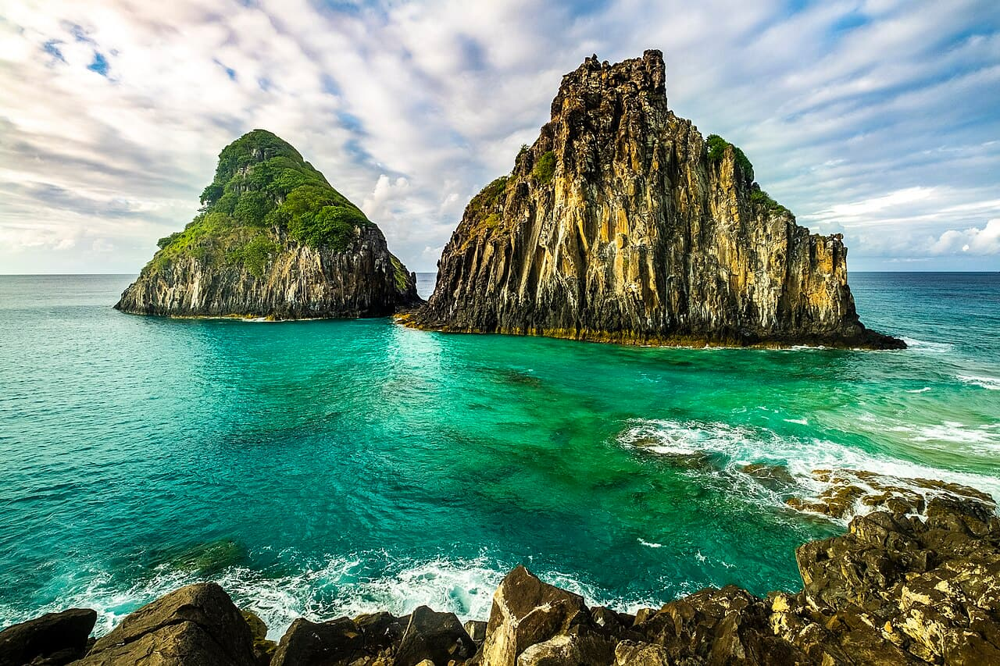

Fernando de Noronha
Brésil · snorkeling, plongée, surf, baignade

Un archipel volcanique classé, à 350 km de la côte : eau limpide, tortues, et une baie où des centaines de dauphins à long bec viennent se reposer chaque matin.
- Lieu
- Brésil
- Niveau
- Intermédiaire
- Activités
- snorkeling, plongée, surf, baignade
- Type d'eau
- Mer / océan
- Coordonnées
- -3.85, -32.42 (position approximative du secteur)
Dangers à connaître
- Parc national marin : accès limité, taxe environnementale, zones interdites.
- Courants forts hors des baies abritées.
- Rochers volcaniques coupants.
Le conseil d'Ocean Buddy
La baie des Dauphins est interdite d’accès : observe les dauphins depuis le belvédère (poste du Sancho, de 6 h 30 à 18 h 30). Paie la taxe d’environnement et réserve l’accès à la piscine d’Atalaia (16 personnes par groupe) auprès de l’ICMBio.
Ouvrir dans Ocean Buddy Télécharger sur l'App Store
Source : Description historique Ocean Buddy · vérification externe en attente.